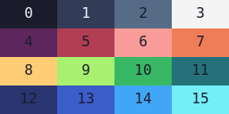

Cheatsheet
Default Colors
Palette based on https://lospec.com/palette-list/sweetie-16
Game Configuration
// Initialize the game
floppy(settings = {});
// make the game screen fill the entire screen
settings.fullscreen = true
// the game screen size
settings.width = opts.height = undefined
// the game screen size
settings.width = opts.height = undefined
// the canvas wrapper
settings.parent = document.body
// target FPS
settings.fps = 60
// the canvas background color
// accept: null or an color index (0 ~ 15)
settings.background = 0
// enable smooth drawing
settings.antialias = true
// scale the canvas
settings.autoscale = true
// disables antialias and force integer scales
settings.pixelart = false
// amount of time (milliseconds) to pause the tapping detection
settings.tappingInterval = 100;
// export all functions to global context
settings.global = true
Functions
/**
* SHAPES DRAWING-RELATED FUNCTIONS
*/
// clear the canvas
clear(color: null|number): void
// draw a color-filled rectangle
rectfill(x, y, w, h, color = 0): void
// draw a outline rectangle
rect(x, y, w, h, color = 0): void
// draw a color-filled circle
circfill(x, y, r, color = 0): void
// draw a outline circle
circ(x, y, r, color = 0): void
// draw a color-filled ellipse
ovalfill(x, y, rx, ry, color = 0): void
// draw a outline ellipse
oval(x, y, rx, ry, color = 0): void
// draw a color-filled polygon
polyfill(points: number[], color = 0): void
// draw a outline polygon
poly(points: number[], color = 0): void
// draw a line
line(x1, y1, x2, y2, color = 0): void
// customize lines and outlines
// see: https://developer.mozilla.org/en-US/docs/Web/API/CanvasRenderingContext2D/lineJoin
// see: https://developer.mozilla.org/en-US/docs/Web/API/CanvasRenderingContext2D/setLineDash
linestyle(width = 1, join = 'miter', dash = null): void
/**
* TEXT DRAWING-RELATED FUNCTIONS
*/
// draw a text
text(x, y, text: string, color = 0, size: number|null, font = 'monospace'): void
// set the text alignment and baseline
// see: https://developer.mozilla.org/en-US/docs/Web/API/CanvasRenderingContext2D/textAlign
// see: https://developer.mozilla.org/en-US/docs/Web/API/CanvasRenderingContext2D/textBaseline
textalign(align = 'start', baseline = 'top'): void
/**
* IMAGE DRAWING-RELATED FUNCTIONS
*/
// draw a image
image(x, y, image: Image|HTMLCanvasElement): void
/**
* IMAGE DRAWING-RELATED FUNCTIONS
*/
// make a image
// see the "Paint" example
paint(width, height, draw: Array|Function): OffscreenCanvas
/**
* ADVANCED DRAWING-RELATED FUNCTIONS
*/
// save the canvas context
push(): void
// restore the canvas context
pop(): void
// update the transformation matrix
// note: angle in radians
transform(translateX, translateY, scale = 1, angle = 0): void
// update the alpha (transparency)
// see: https://developer.mozilla.org/en-US/docs/Web/API/CanvasRenderingContext2D/globalAlpha
alpha(value = 1): void
// update the type of compositing operation
// see: https://developer.mozilla.org/en-US/docs/Web/API/CanvasRenderingContext2D/globalCompositeOperation
blendmode(value = 'source-over'): void
/**
* SOUND-RELATED FUNCTIONS
*/
// play a predefined sound
// note: `n` must be a sound index (0 ~ 15)
sfx(n = 0, volume = 1, pitch = 0, randomness: number|null): AudioBufferSourceNode
// play a ZzFX array of params
// see: https://killedbyapixel.github.io/ZzFX/
// example: sfx([2,.05,598,.07,0,.19,0,1.32,9.9,-70,0,0,0,0,0,0,.3,.02,0,.04])
sfx(params: Array, volume = 1, pitch = 0, randomness: number|null): AudioBufferSourceNode
/**
* UTILS FUNCTIONS
*/
// check a collision between two rectangles
collision(x1, y1, w1, h1, x2, y2, w2, h2): booleanSpecial Variables
// the game canvas
CANVAS: HTMLCanvasElement
// the game canvas 2d context
// see: https://developer.mozilla.org/en-US/docs/Web/API/CanvasRenderingContext2D
CANVAS.ctx
// the game canvas wrapper
PARENT: HTMLElement
// the game screen width
WIDTH: number
// the game screen height
HEIGHT: number
// the center X of game screen
CENTERX: number
// the center Y of game screen
CENTERY: number
// the FPS meter
FPS: number
// the amount of time since the game started
ELAPSED: number
// `true` when the screen is touched/clicked
TAPPED: boolean
// `true` while the screen is being touched/clicked
TAPPING: boolean
// the tap/click X position
TAPX: number
// the tap/click Y position
TAPY: number